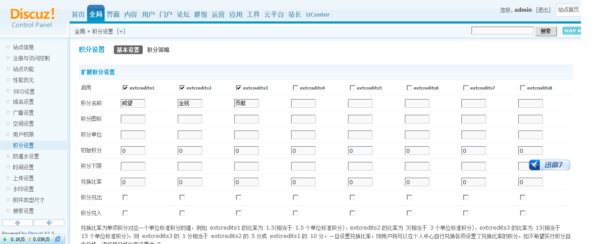
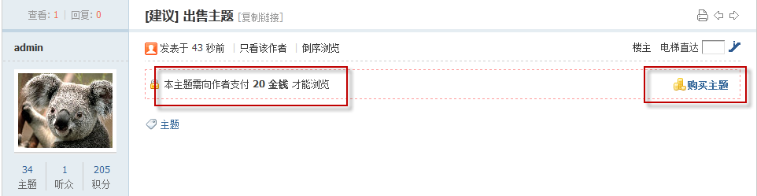
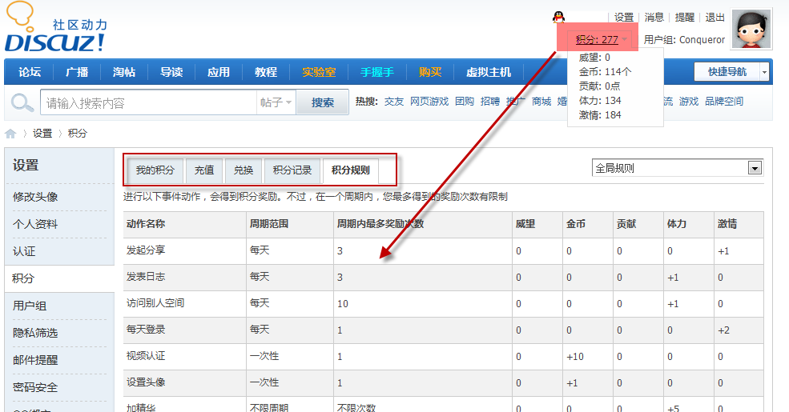

积分
积分系统构成了社区的价值体系，在站点中的两大作用就是衡量用户级别和参与站内交易。会员可以赚取金钱、获得威望、做出贡献，还可以参与主题和商品的购买，这些操作都需要通过积分来体现。另外，公平、合理的积分系统也能增加用户的荣誉感和积极性，站长灵活的运营和调整积分策略能够很好的辅助社区运营。
一、积分设置
管理中心 => 全局 => 积分设置 在基本设置中，系统提供给了扩展积分设置、总积分计算公式以及交易积分设置：
在积分策略设置中，根据站点自身的需要，对每一项积分制定恰当的增减策略，可以有效地建立起一套合理的站点积分体制。
二、虚拟流通
当扩展积分项被设置为交易积分后，用户就可以用这些积分来进行站点的虚拟物品或实体物品的交易，形成一套虚拟的货币流通机制。虚拟物品交易包括主题、附件的购买，悬赏、评分的给予，以及商品的交易等。
例如购买主题：
三、用户积分
系统为用户提供给了用户积分页面，点击“积分”，进入积分页面，用户在这个页面可以查看自己的积分、充值、兑换、查看积分记录和积分规则：
